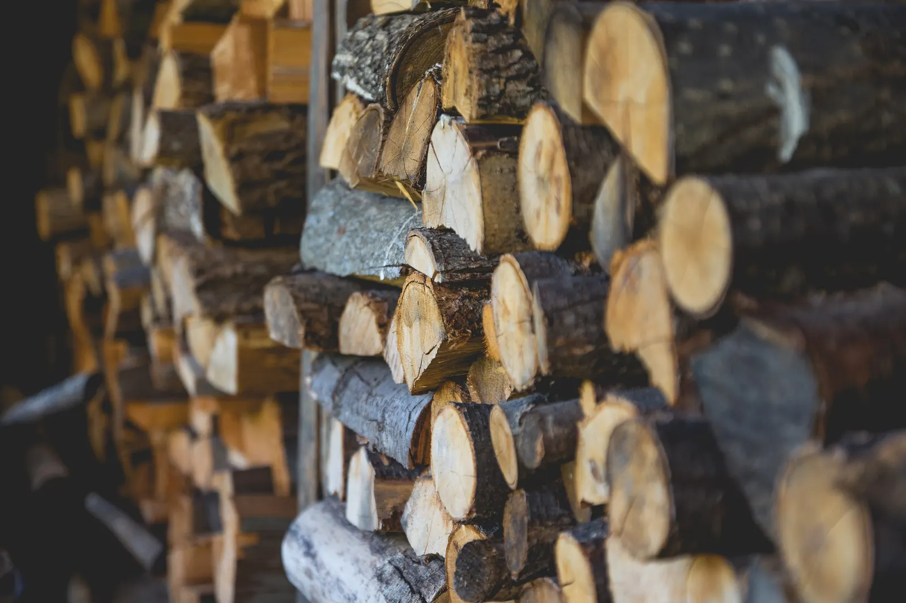
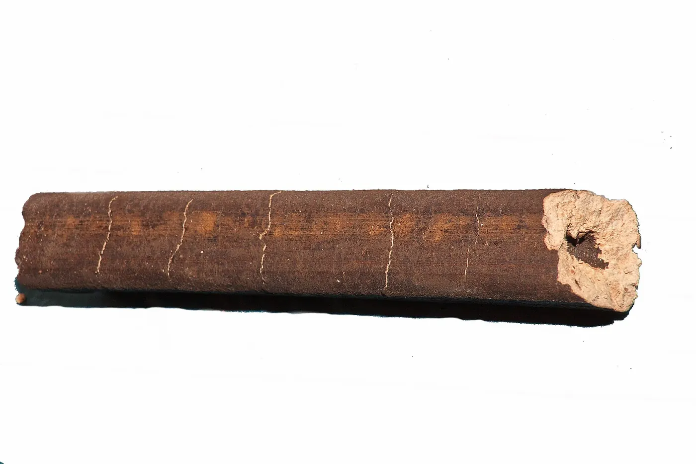
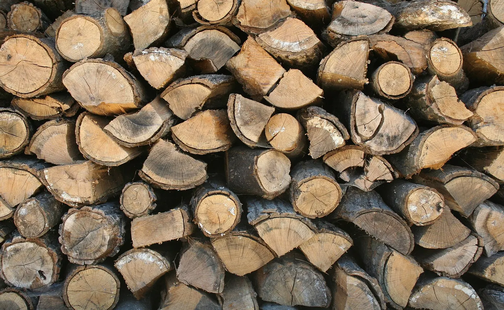

Paliwa drzewne - wiedza praktyka o drewnie, brykiecie i peletach
Jak wybrać paliwo do kominka, pieca, sauny czy pieca do chleba, jak je przechowywać i po czym poznać dobry brykiet. Artykuły pisane z doświadczenia, zbierane od 22 lat.
Działy
Wszystkie artykuły ze starej strony, uporządkowane tematycznie. Każdy otwiera się wygodnie na telefonie.
Brykiet i pelet
6 artykułów- Brykiet do kominków i pieców
- Pelety drzewne - wymagania rynku a normy
- Dostawy peletu - możliwości i bariery
Drewno kominkowe i spalanie
3 artykuły- Gatunki drewna kominkowego
- Co to jest spalanie drewna?
- Emisja spalin z paliw drzewnych
Piece, kominki, piece do pieczenia
3 artykuły- Piece na drewno z rurowym konwektorem
- Amerykańskie piece kominkowe na pelety
- Piece do pieczenia pizzy i chleba
Sauny i łaźnie
2 artykuły- Piece do sauny i bani na paliwa drzewne
- Rzymskie termy a paliwa drzewne
Drewutnie i składowanie drewna
2 artykuły- Drewutnie - firewood shed, Kaminholzschuppen
- Alpejskie tradycje składowania drewna opałowego
Artykuły po niemiecku
4 artykuły- Kaminholz Wassergehalt
- Haus Brennstoffzonen
- Kaminholzdichte
Polecane artykuły

Brykiet do kominków i pieców
„Pokaż mi, jak korzystasz z kominka, a powiem Tobie, kim jesteś.” Strefy spalania w domu, wartość opałowa, wilgotność, kształty brykietów, dostawy, ceny i 8 sposobów na sprawdzenie jakości.
- Brykiet i pelet
Pelety drzewne - wymagania rynku a normy
- Brykiet i pelet
Dostawy peletu - możliwości i bariery
- Brykiet i pelet
Pelety, pelet, pellet, pellets - technologia produkcji
- Drewno kominkowe i spalanie
Gatunki drewna kominkowego
- Drewno kominkowe i spalanie
Emisja spalin z paliw drzewnych
- Piece, kominki, piece do pieczenia
Amerykańskie piece kominkowe na pelety
Pisze praktyk, nie redakcja
Artykuły pisze Lech Kowalewski z firmy NORDWIT w Chodzieży. Od lat zajmuje się paliwami drzewnymi: brykietem, peletem i drewnem kominkowym, a także piecami i urządzeniami, w których się je spala.
Strona działa od 22 lat i jest prowadzona w czterech językach. Nowa wersja zachowuje cały ten dorobek: każdy artykuł zostaje, ze zdjęciami i pod adresem, który Google już zna.
Kontakt z autorem
Kontakt
Pytania o paliwa drzewne, brykiet, pelet i piece.
NORDWIT Lech Kowalewski
ul. Kościelna 4
64-800 Chodzież, Wielkopolska
Telefon
506 523 538
tel. 67 281 04 85
E-mail i strony
nordwit@gmail.com
woodfuels.eu · nordwit.pl